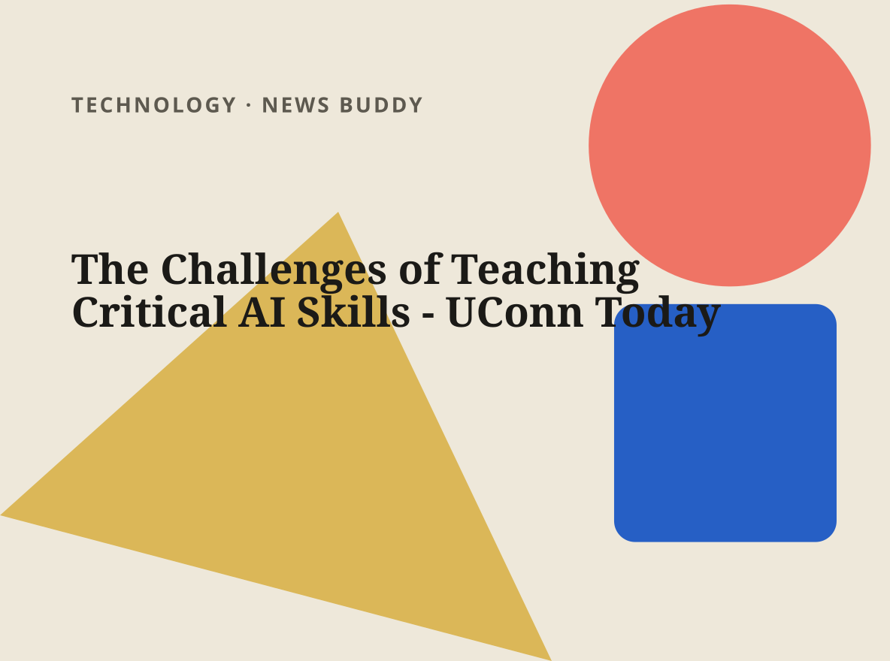

UConn and other educational institutions are reportedly facing significant challenges in effectively teaching critical artificial intelligence skills to students. This development, known only at a headline level, suggests difficulties in curriculum design, resource allocation, or pedagogical approaches for this rapidly evolving field. The reported challenges imply potential hurdles in preparing the next generation of professionals to understand, develop, and ethically apply AI technologies, which could impact future innovation and workforce readiness.